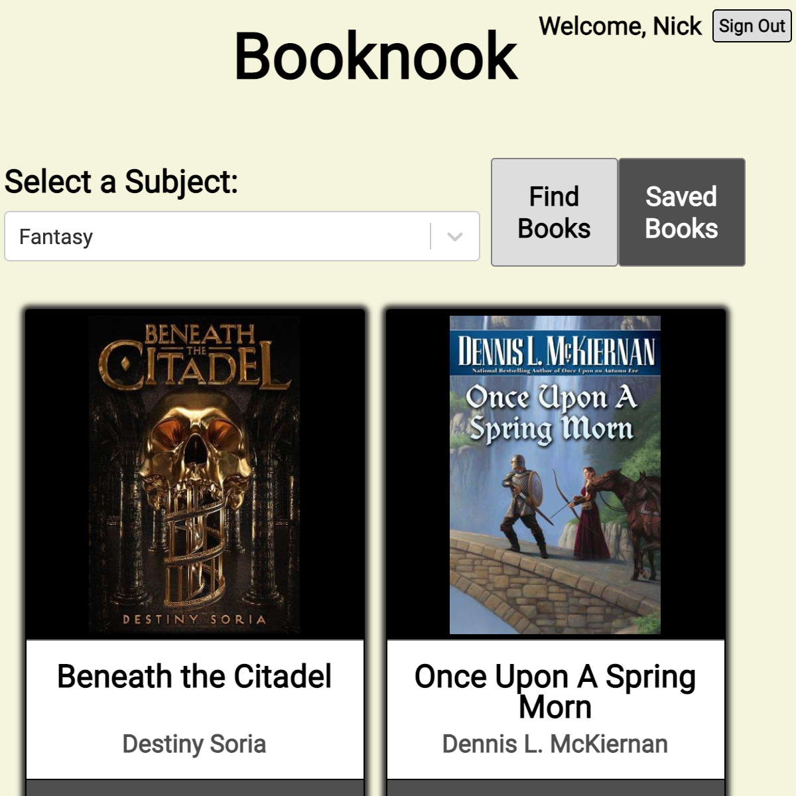

Book Recommendations
Hover for video!
Demo:
Code:
Note: Because this app is hosted on Heroku, it can take a few seconds to start. Once it is done 'spinning up' it should run smoothly.
Web application to discover unique book recommendations based on subject. This project was built as part of an Agile team to develop with micro-services. When a subject is selected, a call is made to the OpenLibraryAPI to retrieve randomized results. Users can get get more information about each book which include a description, a vendor link, and save options if logged in. Users can create an account and log in, to save books that they find for later.
The frontend was built with React with some custom components. The backend was developed with Node.js using Express.js and Axios for routing. A MongoDB database was added to manage user accounts and save individual books to a user's account. User token authentication is achieved with JWT and passwords are protected using the 'bcrypt' hashing function.